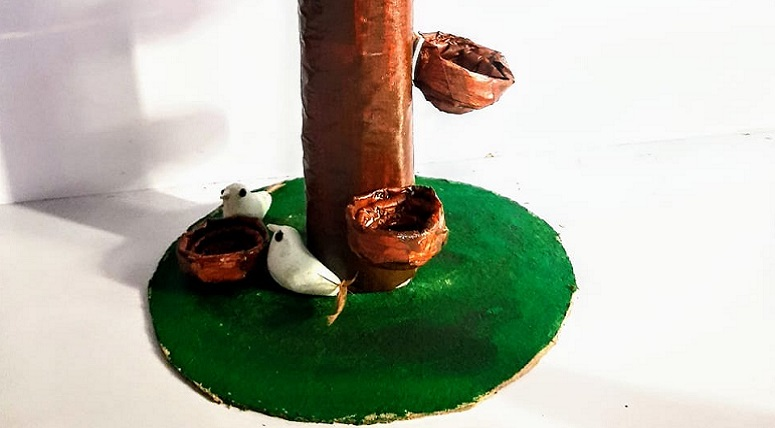
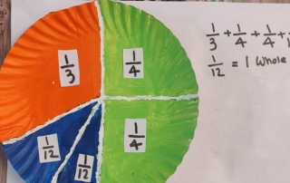
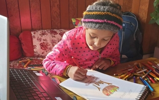

CAMPUS LIFE
Subject Enrichment Activity of CREST by Grade 5
“Creativity is intelligence and having fun.” Keeping in mind the above thought, students of Grade V did a CREST Subject enrichment activity wherein they demonstrated— a unique representation of a food chain, Circle booklet on ecosystem or Role play to showcase their awareness about the environment friendly products. This activity helped them not only to gain conceptual clarity or enrich their subjective knowledge but also boosted their confidence to deliver a presentation with full zeal and enthusiasm even in challenging COVID 19 times.
Kartik Singh of Grade V Mandela continues to Shine in Golf
“Success isn’t about greatness, but hard work and determination.” The talented Kartik Singh, a Grade 5 student at MRIS-51, Gurugram has yet again claimed to win after win in various golfing competitions proving that persistence and determination are a sure way to success and glory. He emerged as a winner during Greens to Glory Junior League of Glory Match I and II, Ultimate Junior Golf Tournament at ITC Classic Manesar, Champion’s Autumn Classic Junior Golf Tournament, and Ultimate Spring to Success Junior Golf Tournament. His achievements are inspiring and appreciated by the MRIS-51, Gurugram family. Keep it up, Champion.

Classification of Materials On The Basis Of Their Properties Grade VI Science
“Knowledge is power but enthusiasm pulls the switch” To make the online learning interesting teachers are leaving no stones unturned to make the sessions interesting and absorbing for students. It could be clearly witnessed in Grade VI Science Session when the topic Classification of materials was explained with the help of live examples. Students enthusiastically participated in the session. They were completely engaged and engrossed and made it a complete success.
achievements

Students bag first International Position in Olympiads
‘The harder you work for something. The greater you will feel when you achieve it.’ The aim of any exam is to provide a unique competitive platform through and identify the young geniuses and create a talent pool for the future. Olympiads are not just only the exams but they do a lot more to bring out the best in a child, develop a sense of confidence in the students and their parents. These also help parents identify the talent of their child and help school students to test their understanding, level of knowledge and power of reasoning. SOF Olympiad exams were conducted in #Manav Rachna International School, Sec-51, Gurugram targeted to increase students’ efficiency. Six geniuses of the school have got 1st International Position in different Olympiads. It is an honour for the school to have such achievers. They have made the school proud with their remarkable results. We appreciate the hard work and dedication on the part of the children and their parents, and congratulate them for the same.
Congratulations to the French Olympiad (ELE) Achievers
Learning and extra-curricular activities are the two most important pillars of school life. We, at MRIS-51 Gurugram provide ample opportunities to our learners to excel and hone their skills. The students grabbed one such opportunity during the Olympiads and participated with great fervour. Our students have bagged accolades in the French Olympiad that has made MRIS-51, Gurugram proud. We congratulate our rising stars for outstanding performance and wish for their bright future.
What's new
-
Intra Class Activities (Middle Wing)

The month of December unfurled the frostiness of winter and brought in the joy of NEW YEAR. Amidst this happiness, the school was a witness to the myriads of activities that were conducted for the students of the middle wing of MRIS Charmwood. Various Intraclass Competitions were held to mark the occasion. The competitions were a fusion of talent, imagination, creativity, and alertness. ‘Best Out of Waste’ activity was held for the students of class VIII on 17th December 2020. The focus of the activity was to create a platform to exhibit their creative talent. The children participated earnestly in the fun-filled activity and came up with amazing ideas. Children used bio-degradable waste material and made pots, pen stands, wall hangings, lampshades, stuffed toys to name a few. Spontaneity and confidence were the hallmarks of the competition. The students left everyone awe-struck as they presented their talent so immaculately and effortlessly. Beauty is the realm of poetry, children enjoy the beauty of expression, thoughts, feeling, rhyme, rhythm, and music of words. Taking all these facts into consideration the children got an opportunity to exhibit their talent and confidence through a Poetry Recitation competition held for class VII. The competition inspired the children to come forward and recite virtually. Students were judged on parameters like confidence, voice modulation, the props used, and the overall presentation. Learning gives Creativity, Creativity leads to thinking, Thinking provides knowledge, Knowledge makes us Great…. Quiz competitions are always interesting and informative, which provide excitement among the students and also make them aware of current affairs. Keeping this in mind intraclass quiz competition was held for class VI. Topics of the quiz covered basic Mathematics and English. The questions put forth to the students were in Microsoft Forms that were intriguing as well as exciting. MRIS CW encourages such positive competitions and hopes to bring out the best in all its students through such competitive events, while ensuring that the children learn through all possible ways- not just through books and classroom teachings.
-
Fraction Art Activity by Grade V students
“Pure Mathematics is in its own way, the poetry of logical Ideas” Keeping in mind the above thought, students of Grade V did a Fraction Art Activity, wherein they visualised different proper fractions and their values using cut-outs of fractions and joining them to form one complete circle. This activity was beautifully done showcasing their art skills and conceptual ideas. The activity encouraged the students to think deeply and come up with innovative and fun-filled ways to understand clearly the applications of Fractions.
-
Annual Projects Activity for Grades II-IX
Climate change is a menace to our world. Our league of superheroes is taking action now and they want YOU to join them! We at Manav Rachna International School, Sector-51, Gurugram have adopted four SDGs as Annual Projects and prepare our students to target their action in the following critically important areas: poverty, hunger, education, health and well-being, education, gender equality, water and sanitation, energy, economic growth and decent work, sustainable cities, consumption and production. Students of all the four Clans from Grades II to IX participated ardently in their respective Annual projects (UNSDG). Children participated in an array of activities like Slogan writing, Poster making, Banner designing. Brainstorming and discussion on eliminating and preventing Child labour, Comic strip, Poem writing were also a part of the same. Children created various items by recycling waste materials like sling bags from used bags, old cloth, jute and paper, soft toys from old socks or cotton, Bio-plastic bowls, and wall organizers. The choice of various mediums to present quality work was impressive and heartening. It was a great effort put forth by students which deserves applaud, appreciation and connection towards society and the planet. Our climate action heroes are making the world a better place by using their knowledge and skills.
ALLUMINI
Dr. OP Bhalla
A great person enlightens and people follow. He exels and the world pursues.
Allumini List
Dr. OP Bhalla

Ms. Alpana Baveja
Ms. Alpana Baveja
“I love to travel as it helps me to discover a whole new world, explore exquisite places and broaden my perspectives about life. It also goes a long way in helping me build new relationships, something that I am very passionate about. I also feel that travelling is a perfect way to celebrate life!
I also love to read books which helps me to gain from others’ knowledge and experiences. Reading also helps me in my quest for continuous self-improvement, both on the professional and personal front. Besides, reading helps me to relax, rejuvenate and stay energized in an incomparable way.”